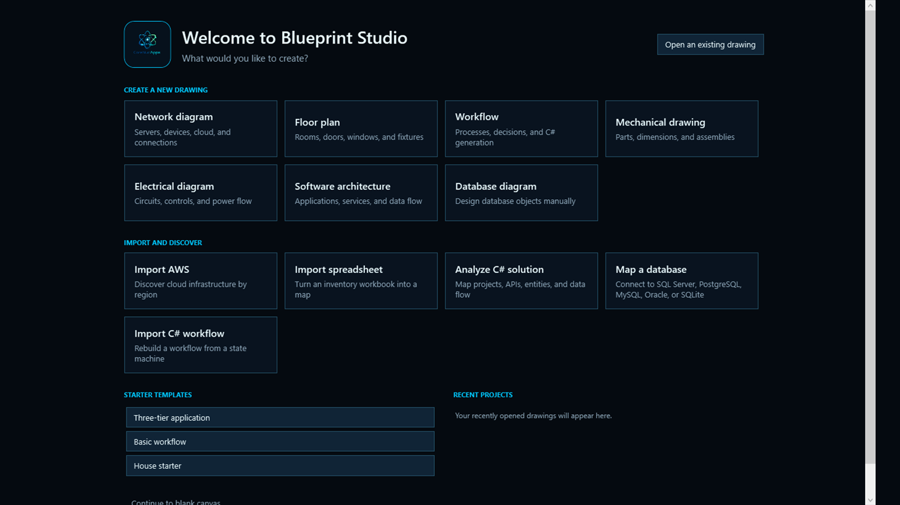
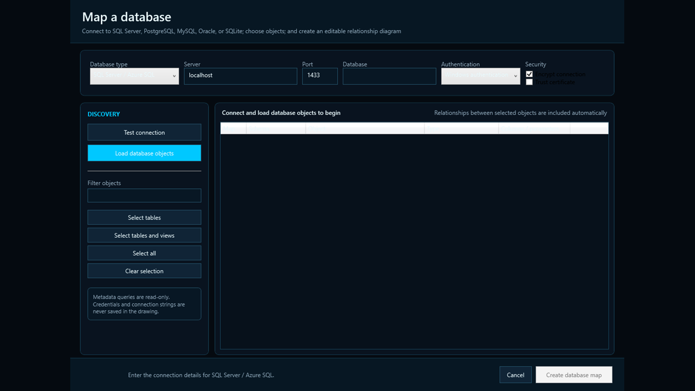
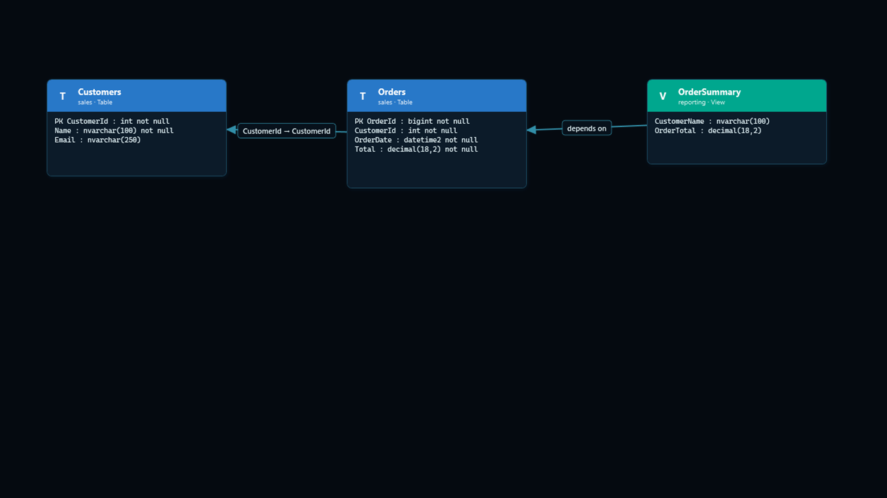

Everything remains editable.
Imported diagrams use the same components, connectors, layers, pages, publishing controls, and portable .blueprint.json format as drawings created by hand.
Product tour
From a guided starting point to a detailed technical map, Blueprint Studio keeps complex work approachable and editable.



Imported diagrams use the same components, connectors, layers, pages, publishing controls, and portable .blueprint.json format as drawings created by hand.